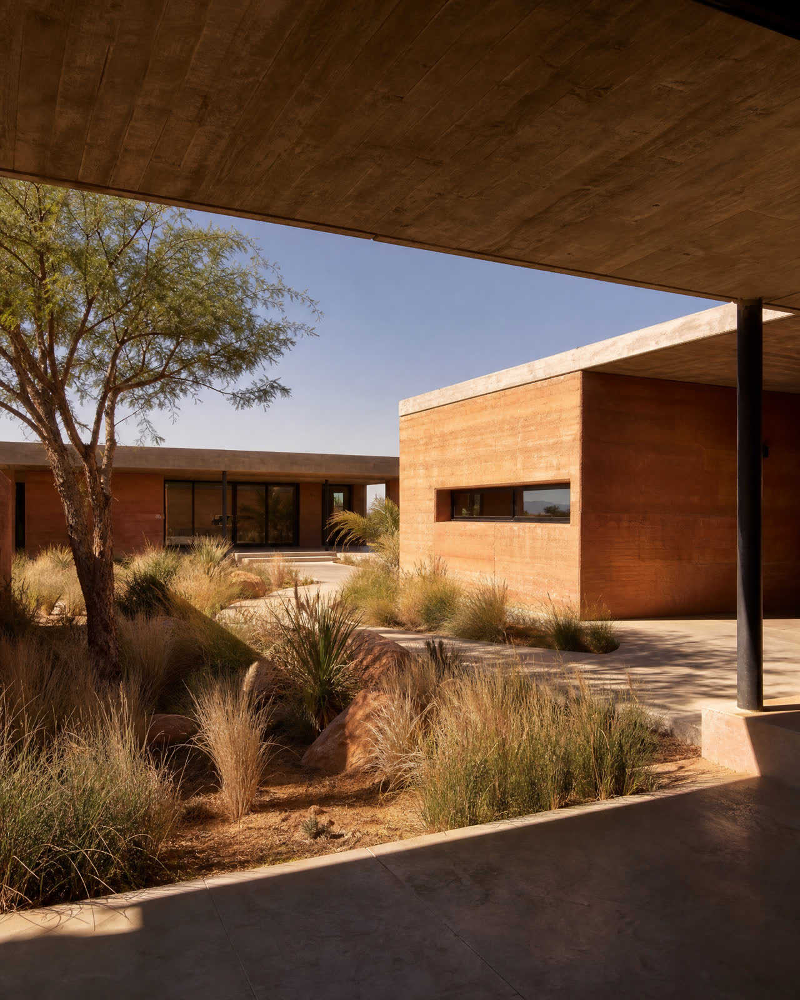
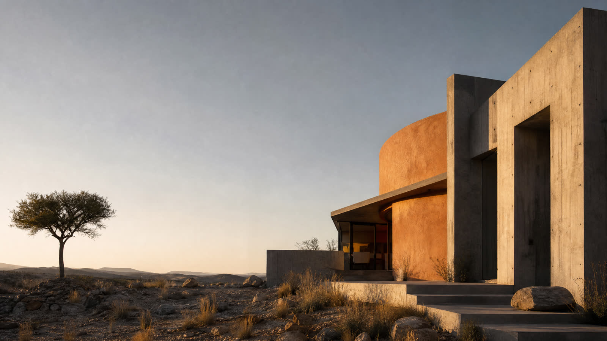
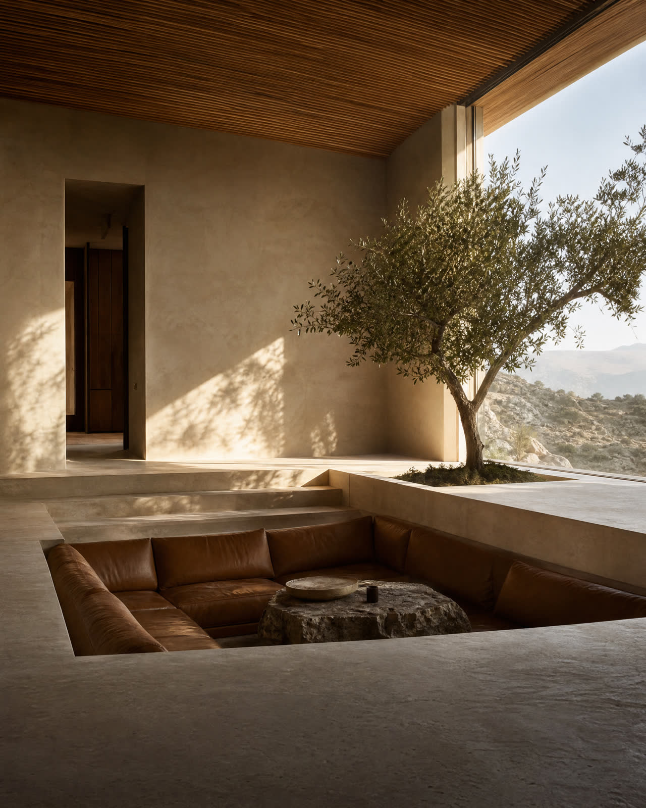
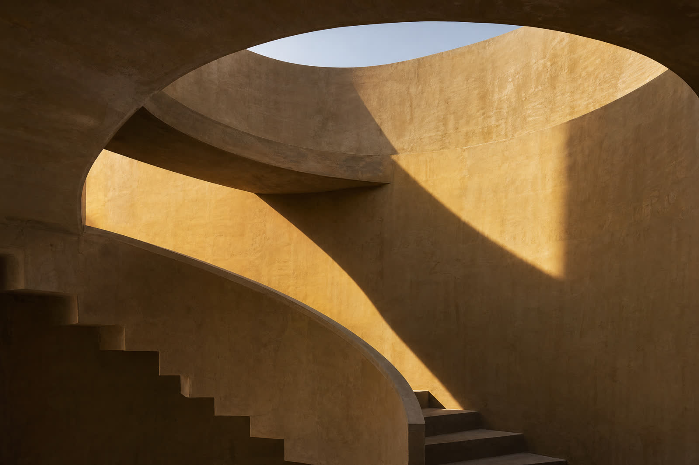
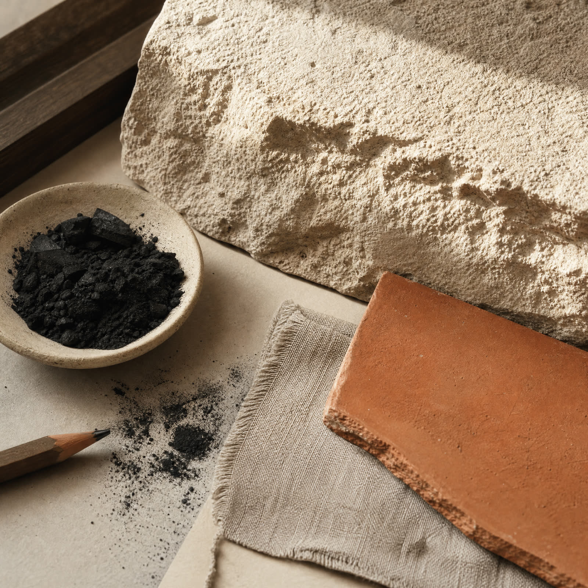

Windhoek / Namibia / Est. 2016
Built for
the long
horizon.
TALA is an architecture and landscape practice working with climate, craft and the quiet intelligence of a place.

01 — Position
A practice for places that ask you to slow down.
We make less land.
More room for light,
air and living.
More room for light,
air and living.
Our work begins outside the drawing.
We look at sun paths, water lines, prevailing winds and the way a material will age. The building follows from there.
02 — Selected work
Four studies in belonging.



03 — How we work
01 / READ
Start with the site.
Before a line is drawn, we spend time with the weather, the ground and the daily rituals that already belong there.
02 / EDIT
Make only what is needed.
We reduce the brief to its generous essentials, then find the smallest move that can hold the biggest feeling.
03 / TUNE
Design for the passing day.
A room is never one room. It shifts with the sun, the season and the people who make it their own.
04 / STAY
Let materials tell time.
We choose honest surfaces that weather well, gather memory and become more themselves with use.
04 — Material note
Warmth is a
structural
decision.
Sandstone, clay, linen, charcoal. A palette gathered from the landscape, never imposed over it.
sand
earth
shade
linen
Have a
place in mind?
Tell us where you are, what you are making and what you want the place to feel like when it is finished.
studio@tala.place →